Глава 2. Линейные электрические цепи в режиме постоянного тока
2.1. Метод законов Кирхгофа2.2. Преобразование резистивных электрических цепей
2.3. Метод наложения
2.4. Метод контурных токов
2.5. Метод узловых потенциалов
2.6. Метод эквивалентного генератора
2.7. Примеры применения резистивных цепей
2.8. Алгоритмы анализа линейных резистивных цепей на ЭВМ
Вопросы и задания для самопроверки
Глава 2. Линейные электрические цепи в режиме постоянного тока
2.1. Метод законов Кирхгофа
В электрических цепях, содержащих активные элементы (электронные лампы, транзисторы, операционные усилители и другие зависимые источники) важным режимом работы является статический. В статическом режиме на электроды активного элемента подаются постоянные токи и напряжения, обеспечивающие заданные условия работы того или иного устройства. Статический режим характеризуется зависимостями между постоянными токами и напряжениями в отдельных частях электрической цепи и является одним из основных режимов работы любого электрического устройства. Поэтому анализ цепей в режиме постоянного тока играет важную роль в общей теории электрической связи.
Как отмечалось в § 1.2 при постоянном токе и напряжении индуктивность эквивалентна короткозамкнутому участку (рис. 1.1, а), емкость – разрыву цепи. Таким образом, в режиме постоянного тока в модели цепи будут отсутствовать реактивные элементы, и она приобретет чисто резистивный характер. Линейные резистивные цепи полностью описываются системой линейных алгебраических уравнений, составляемых на основании закона Кирхгофа. В этой главе рассмотрим основные методы анализа линейных резистивных цепей, находящихся под воздействием постоянных токов и напряжений. Постоянные токи и напряжения в дальнейшем будем обозначать прописными буквами I и U соответственно.
Метод расчета электрических цепей, основанный на законах Кирхгофа, в которых независимыми переменными являются токи в ветвях, называют методом токов ветвей. В соответствии с этим методом для нахождения токов или напряжений ветвей составляются (nу – 1) уравнений (1.16) по ЗТК и (nв – nу + 1) уравнений (1.17) по ЗНК. В результате получаем систему из (nу – 1) + (nв – – nу + 1) = nв линейно-независимых уравнений, число которых равно числу токов ветвей. Совместное решение этой системы позволяет найти все токи.
При выборе независимых контуров необходимо руководствоваться топологией электрической цепи (§ 1.3): составить граф цепи, выбрать дерево, дополнить его хордой, при этом образуется контур. Путем последовательного дополнения хордами дерева до исходного графа получаем (nв – nу + 1) независимых контуров.
Пример. Рассчитать токи ветвей схемы резистивной цепи, изображенной на рис. 2.1. а по методу уравнений Кирхгофа.
Построим граф цепи (рис. 2.1, б) и выберем дерево (рис. 2.1, в). Дополним дерево хордами 2, 5, 6 (на рис. 2.1, в показано пунктиром). В результате образуется три независимых контура I, II, III (рис. 2.1, а). Составим уравнение по ЗТК и ЗНК.
Схема имеет ny = 4 узла, nв = 6 ветвей. Выберем узел 4 в качестве базисного и составим ny = 3 уравнения по ЗТК:
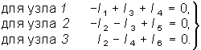
(2.1)По ЗНК составляем nв – nу + 1 = 3 уравнения для контуров, показанных на рис. 2.1, а стрелками: для контура I –Uг1 + U1 + U3 + U5 = 0; для контура II + Uг2 + U2 – U3 + U4 = 0; для контура III –Uг2 – U2 + U6 – U5 = 0. Или с учетом закона Ома (1.6):
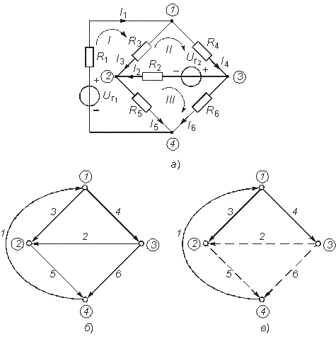
Рис. 2.1
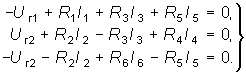
(2.2)Решая совместно системы уравнений (2.1) и (2.2), найдем искомые токи.
При использовании законов Кирхгофа в качестве независимых переменных можно было взять напряжения ветвей (метод напряжения ветвей) или токи одних ветвей и напряжения других (гибридный метод).
В случае, если в цепи имеется ветвь с источником тока, то неизвестным параметром в этой ветви является напряжение на зажимах источника, которое можно найти методом напряжения ветвей.
2.2. Преобразование резистивных электрических цепей
В случае, когда на цепь воздействует один источник постоянного напряжения или тока, наиболее эффективным является метод преобразования электрических цепей. Суть этого метода заключается
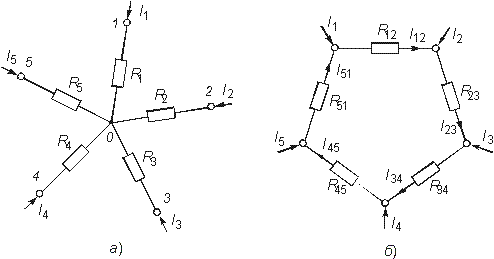
Рис. 2.2
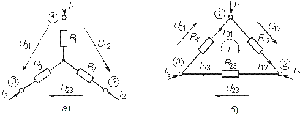
Рис. 2.3
в нахождении эквивалентного сопротивления цепи относительно зажимов (полюсов) источника.
В § 1.5 были рассмотрены простейшие методы преобразования последовательного и параллельного соединенных пассивных элементов (см. формулы (1.22)–(1.24) и (1.27)–(1.29)). Однако на практике встречаются более сложные соединения элементов, которые нельзя свести только к последовательному или параллельному. Примером подобного соединения являются соединения многолучевой звездой (рис. 2.2, а) и многоугольником (рис. 2.2, б).
Характерной особенностью этих соединений является наличие внутреннего узла 0 в звезде и внутреннего контура в многоугольнике. Наиболее часто встречаются случаи трехлучевой звезды и треугольника (рис. 2.3, а, б).
Найдем формулы преобразования соединения “треугольника” в “звезду”. Запишем для схемы “треугольник” уравнения по ЗТК и ЗНК (рис. 2.3, б):
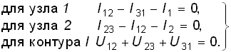
(2.3)Решая систему (2.3) относительно U12 с учетом равенств U23 = = R23I23 и U31 = R31I31, получаем
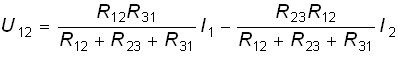
. (2.4)Для схемы “звезда” на основании ЗНК для U12 можно записать (см. рис. 2.3, а):
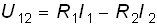
. (2.5)Так как на основании принципа эквивалентности напряжение U12 и токи I1 и I2 из (2.4) и (2.5) равны друг другу, то попарно равны и сомножители при токах I1 и I2:
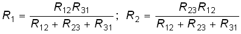
. (2.6)Уравнение для R3 получаем аналогично (круговой заменой индексов):
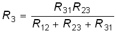
. (2.7)Уравнения (2.6) и (2.7) позволяют осуществить переход от соединения резистивных элементов “треугольник” к соединению “звезда”. Обратный переход можно получить по формулам
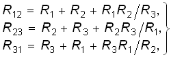
(2.8)осуществляемые из (2.6) и (2.7).
Если выразить сопротивление сторон треугольника и лучей звезды через проводимости G12 = 1/R12, G23 = 1/R23, G31 = = 1/R31, G1 = 1/R1, G2 = 1/R2, G3 = 1/R3, то формулы (2.8) примут дуальный вид (2.6), (2.7):
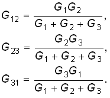
(2.9)Пример. Рассчитать токи ветвей схемы резистивной цепи, изображенной на рис. 2.4, а. Данная схема может служить моделью измерительного моста, который находит широкое применение в различных измерительных приборах, в частности для измерения сопротивлений. Принцип работы моста основан на выполнении условий баланса его плечей.
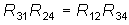
.При этом потенциалы узлов 2 и 3 оказываются одинаковыми и в диагонали моста R23 ток будет равен нулю. Таким образом, если включить в диагональ моста вместо R23 измерительный прибор – амперметр, то путем изменения одного из сопротивлений плеча (например, R24 с помощью магазина сопротивлений), можно найти сопротивление другого (например R31). Для случая, когда R12 = R31 = R, условие баланса достигается при R34 = R24.
Преобразуем треугольник R12, R23, R31 в звезду с лучами R1, R2, R3 (рис. 2.4, б), где R1, R2, R3 определяются формулами (2.6) и (2.7). Тогда эквивалентное сопротивление цепи относительно зажимов источника (узлы 1 и 4)
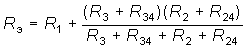
.Ток источника определяем по закону Ома:
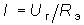
,а токи ветвей I34 и I24 по “формуле разброса”, которая может быть получена на основании ЗТК и закона Ома для сопротивлений (R3 + R34) и (R2 + R24):
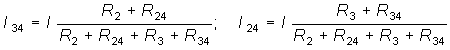
.Для нахождения токов I12 и I31 определим напряжение U12 для преобразованной схемы (рис. 2.4, б): U12 = R1I + R2I24. Учитывая, что U12 в схеме треугольника (рис. 2.4, а) и в схеме звезды (рис. 2.4, б) равны согласно принципа эквивалентности, найдем ток I12 = U12/R12. Токи I23 и I31 определяем по ЗТК: I23 = I12 – I24; I31 = I23 – I34.
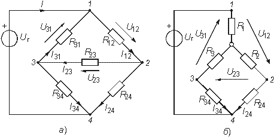
Рис. 2.4
Аналогично формуле (2.9) можно получить формулы преобразования n-лучевой звезды в полный многоугольник с числом ветвей равным nв = n(n – 1)/2:
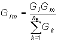
. (2.10)Следует отметить, что обратная задача преобразования многоугольника в эквивалентную n-лучевую звезду при n>3 не имеет решения, так как при этом оказывается число уравнений n(n – 1)/2 превышает число неизвестных.
2.3. Метод наложения
В основе метода наложения лежит принцип суперпозиции (наложения), линейных электрических цепей (§ 1.6). Этот метод применяется в случае, когда в цепи действует несколько источников напряжения или тока. При этом в соответствии с этим принципом находят частичные токи и напряжения, а результирующие реакции определяются путем алгебраического суммирования частичных токов и напряжений.
Проиллюстрируем принцип наложения на примере резистивной цепи, изображенной на рис. 2.5, а, содержащей идеальные источники напряжения. Найдем ток в резистивном элементе R3. Положим вначале, что в цепи действует только один источник Uг1; второй источник напряжения исключается и зажимы его закорачиваются. При этом получаем частичную схему, изображенную на рис. 2.5, б. Определим ток I3' от воздействия напряжения Uг1:
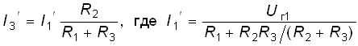
.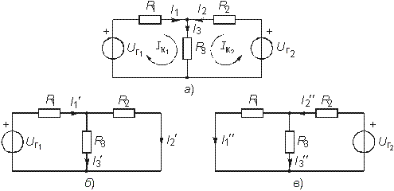
Рис. 2.5
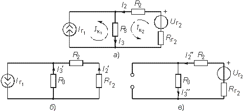
Рис. 2.6
Теперь полагаем, что в цепи действует только источник Uг2. Исключив источник Uг1, получим вторую частичную схему (рис. 2.5, в). Ток I3" от воздействия Uг2 определится как
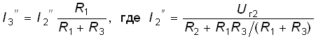
.Результирующий ток I3 найдем как алгебраическую сумму частичных токов I3' и I3" : I3 = I3' + I3" . При определении результирующих токов знак “+” берут у частичных токов, совпадающих с выбранным положительным направлением результирующего тока, и знак “–” – у несовпадающих. Как следует из рассмотренного примера, при составлении частичных электрических схем исключаемые идеальные источники напряжения закорачиваются. В случае, если в цепи действуют источники напряжения с внутренними сопротивлениями Rг, при их исключении они заменяются своими внутренними сопротивлениями Rг.
При наличии идеальных источников тока соответствующие ветви исключаемых источников размыкаются, а при наличии реальных источников они заменяются своими внутренними проводимостями Gг.
Пример. Определить ток I3 в цепи, изображенной на рис. 2.6, а. Составляем две частные схемы (рис. 2.6, б, в), для которых находим частичные токи:
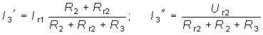
.Результирующий ток I3 = I3" – I3' .
При наличии в цепи зависимых источников они остаются в частичных схемах неизменными.
2.4. Метод контурных токов
При определении токов и напряжений в отдельных ветвях цепи с nв-ветвями по законам Кирхгофа в общем случае необходимо решить систему из nв уравнений. Для снижения числа решаемых уравнений и упрощения расчетов используют методы контурных токов и узловых напряжений.
Метод контурных токов позволяет снизить число решаемых уравнений до числа независимых контуров, определяемых равенством (1.15). В его основе лежит введение в каждый контур условного контурного тока Ik, направление которого обычно выбирают совпадающим с направлением обхода контура. При этом для контурного тока будут справедливы ЗТК и ЗНК. В частности, для каждого из выделенных контуров можно составить уравнения по ЗНК. Поясним суть метода контурных токов на примере резистивной цепи, схема которой изображена на рис. 2.5, а. Для контурных токов Iк1 и Iк2 этой схемы можно записать уравнения по ЗНК в виде
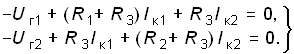
Перенесем Uг1 и Uг2 в правую часть системы и получим так называемую каноническую форму записи уравнений по методу контурных токов:
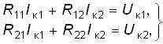
где R11 = R1 + R3; R22 = R2 + R3 называют собственными или контурными сопротивлениями I и II контуров: R2 = R21 = R3 – взаимными сопротивлениями I и II контуров; Uк1 = Uг1; Uк2 = = Uг2 – контурными задающими напряжениями. Истинные токи в ветвях находятся как алгебраическая сумма контурных токов: I1 = Iк1; I2 = Iк2; I3 = Iк1 + Iк2.
В общем случае, если резистивная цепь содержит k независимых контуров, система уравнений имеет вид
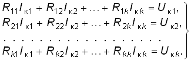
(2.11)Слагаемые RlnIкn в уравнении (2.11) берутся со знаком “+”, если ток Iкl и Iкn обтекают Rln в одном направлении и со знаком “–” в противном случае. Контурное задающее напряжение Uк равно алгебраической сумме задающих напряжений источников, входящих в каждый контур. Со знаком “+” суммируются источники, задающее напряжение которых направлено навстречу контурному току, и со знаком “–”, если направление напряжения и контурного тока совпадают.
Решая систему уравнений (2.11), найдем значения контурных токов
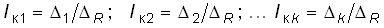
,где
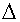
R – главный определитель системы (2.11):
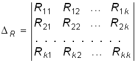
. (2.12)Определитель k находится путем замены k-го столбца в (2.12) правой частью системы (2.11). Например, для 1 имеем:
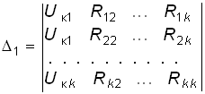
. (2.13)Разлагая определитель 1 по элементам первого столбца, можем получить уравнение для Iк1 в другой форме:
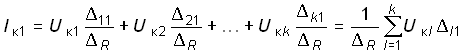
, (2.14)где 11, 12, ..., k1 – алгебраические дополнения определителя (2.12).
Аналогичные уравнения можно получить для остальных токов:
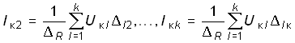
. (2.15)Как следует из уравнений (2.14) и (2.15), контурный ток может быть получен алгебраическим суммированием частичных токов от воздействия каждого контурного задающего напряжения в отдельности. Таким образом, полученный результат отражает рассмотренный в § 1.6 принцип наложения.
Если в схеме кроме источников напряжения содержится п-ветвей с источниками тока, то независимые контуры выбираются так, чтобы источник тока входил только в один контур. Это можно сделать, если выбрать дерево графа цепи таким, чтобы источник тока входил в одну из хорд. Число контурных уравнений при этом уменьшается до
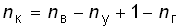
. (2.16)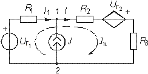
Рис. 2.7
Напряжения от задающих токов этих источников учитываются в левой части системы (2.11) на взаимных сопротивлениях, которые эти токи обтекают. Например, для схемы, изображенной на рис. 2.6, а, составляется только одно уравнение для II контура:
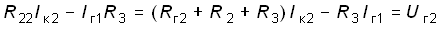
.Сформулированные выше правила составления уравнений по методу контурных токов справедливы и в случае зависимых источников напряжения ИНУН и ИНУТ.
Пример. Найдем токи в цепи содержащей ИНУТ с задающим напряжением Uг2 = HRI1 (рис. 2.7) по методу контурных токов.
Учитывая, что цепь содержит ветвь с идеальным независимым источником тока J согласно (2.15) составим всего одно уравнение для контурного тока Iк. При этом задающий ток источника тока J замыкаем по ветви c R1 и Uг1, в результате получим
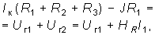
или с учетом того, что I1 = Iк – J, окончательно получим
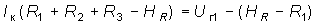
.Отсюда следует
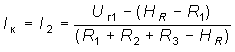
.Запишем уравнение контурных токов в матричной форме. Закон Ома в матричной форме имеет вид
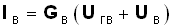
, (2.17)или
(2.18)
где Gв = Rв–1, Gв, Rв – квадратная диагональная матрица проводимостей и сопротивлений ветвей.
Iв, Uгв, Uв – матрицы-столбцы токов, задающих напряжений источников и напряжений ветвей. Умножив слева обе части равенства (2.17) на контурную матрицу В и учтя, что согласно ЗНК (1.20) ВUв = 0, получим
. (2.19)
Токи ветвей связаны с контурными токами соотношением:
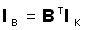
(2.20)где Iк – матрица-столбец контурных токов.
Подставляя (2.19) в (2.18), получаем:
. (2.21)
Если учесть, что
, (2.22)
где Rк – квадратная матрица контурных сопротивлений; Uк – матрица-столбец контурных задающих напряжений, то в соответствии с (2.20) получим матричное уравнение контурных токов
. (2.23)
Пример. Рассмотрим схему, изображенную на рис. 2.8, а. В соответствии с направлением токов строим направленный граф цепи (рис. 2.8, б) и дерево графа (рис. 2.8, в). Подсоединяя к дереву хорды (на рис. 2.8, г обозначены пунктиром), получаем три независимых контура. Выбрав направление обхода контуров I, II и III, в соответствии с правилом, изложенным в § 1,3, строим контурную матрицу
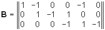
.Матрица сопротивлений ветвей Rв будет иметь вид
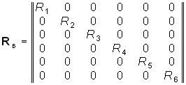
.Найдем матрицу контурных сопротивлений:
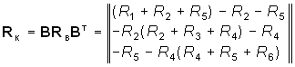
.Матрицу контурных задающих напряжений найдем согласно (2.22)
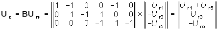
.Подставив Uк и Rк в уравнение (2.23), получим уравнение контурных токов в матричной форме. После нахождения Iк токи ветвей определим согласно (2.20)
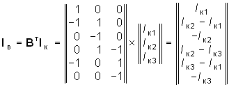
.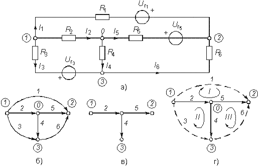
Рис. 2.8
Для линейных электрических цепей важную роль играет принцип взаимности (теорема обратимости). Он гласит: если источник напряжения, помещенный в какую-либо ветвь l пассивной линейной электрической цепи, вызывает в другой ветви k ток определенного значения, то этот же источник, будучи помещенный в ветвь k, вызывает в ветви l ток с тем же значением. Справедливость этого принципа следует непосредственно из уравнений (2.14) и (2.15) с учетом того, что lk = kl.
2.5. Метод узловых потенциалов
Метод узловых потенциалов (узловых напряжений) является наиболее общим и широко применяется для расчета электрических цепей, в частности, в различных программах автоматизированного проектирования электронных схем.
Метод узловых потенциалов базируется на ЗТК и законе Ома. Он позволяет снизить число решаемых уравнений до величины, определяемой равенством (1.14). В основе этого метода лежит расчет напряжений в (ny – 1)-м узле цепи относительно базисного узла. После этого на основании закона Ома находятся токи или напряжения в соответствующих ветвях. Рассмотрим сущность метода узловых потенциалов на примере резистивной цепи, изображенной на рис. 2.9, а. Примем потенциал V3 = 0 (базисный узел) и с помощью (1.31) преобразуем источники напряжения в эквивалентные источники тока (рис. 2.9, б);
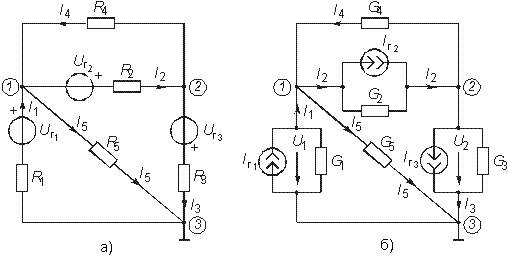
Рис. 2.9
где Iг1 = Uг1G1; Iг2 = Uг2G2; Iг3 = Uг3G3; G1 = = 1/R1; G2 = 1/R2; G3 = 1/R3; G4 = 1/R4; G5 = 1/R5.
Составим уравнения для узлов 1 и 2 по ЗТК:
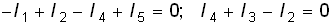
. (2.24)Каждый из этих токов можно выразить через узловые потенциалы и токи Iг1, Iг2, Iг3:
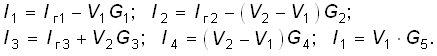
Подставив эти значения в уравнение (2.24), получим после группировки членов при V1, V2 и переносе Iг1, Iг2, Iг3 в правую часть:
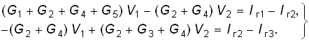
(2.25)Введем следующие обозначения:
Тогда система уравнений (2.25) примет вид
(2.26)
Проводимости G11 и G22 представляют собой арифметическую сумму проводимостей всех ветвей, подсоединенных соответственно к узлам 1 и 2; они называются собственными проводимостями узлов 1 и 2. Проводимости G12 = G21 равны арифметической сумме проводимостей всех ветвей, включенных между узлами 1 и 2, и называются взаимными проводимостями узлов 1 и 2. Алгебраическую сумму задающих токов Iу1 и Iу2 источников тока подключенных соответственно к узлам 1 и 2 называют задающими узловыми токами узлов 1 и 2. Задающие токи источников в алгебраической сумме берутся со знаком “+”, если положительное направление задающего тока источника ориентировано к соответствующему узлу, и “–”, если от узла. Например, для узлового тока Iу1 со знаком “+” берется ток Iг1, так как ориентирован по направлению к узлу 1, и знак “–” берется для Iг2, так как он ориентирован от узла 1.
Решив систему (2.26) относительно V1 и V2 определим узловые потенциалы цепи. Искомые токи находим по закону Ома.
Полученный результат можно обобщить на произвольную резистивную схему с п узлами. Если принять п-й узел за базисный, то система уравнений по методу узловых потенциалов приобретает вид
(2.27)
где Iу1, Iу2, ... , Iу(n –1), – задающие узловые токи в узлах 1, 2,..., (n – 1).
Решение системы (2.27) можно получить с помощью определителей
,
где определитель системы (2.27)
. (2.28)
Определители 1, 2, ... , (n –1), находятся путем замены соответствующего столбца в (2.28) задающими узловыми токами Iу1, Iу2, ... , Iу(n –1). Разлагая определители 1, 2, ... , (n –1) по элементам 1, 2, ... , (n – l)-гo столбца, получаем по аналогии с (2.14) уравнения узловых напряжений:
(2.29)
Из уравнений (2.29) так же как из уравнений (2.14), следует, что узловые потенциалы определяются алгебраической суммой частичных узловых потенциалов, обусловленных действием каждого задающего узлового тока в отдельности, т. е. как и в методе контурных токов уравнения (2.29) отражают принцип наложения, характерный для линейных электрических цепей.
Рассмотренный метод составления узловых напряжений справедлив и при наличии в цепи зависимых источников типа ИТУТ и ИТУН. В цепи, изображенной на рис. 2.10,
Рис. 2.10
содержится кроме независимого источника напряжения Uг1 зависимый ИТУН с задающим током J3 = = HGU1. Определим токи в цепи методом узловых потенциалов.
В соответствии с вышеизложенным методом примем за базисный узел V2 = 0. Тогда для узла 1 получим
.
Отсюда находим
где G1 = 1/R1; G2 = 1/R2; G3,4 = 1/(R3 + R4).
Запишем уравнение по метолу узловых потенциалов в матричной форме. Умножим элементы редуцированной структурной матрицы A0 на потенциалы V соответствующих узлов, в результате получим матрицу напряжения ветвей:
. (2.30)
Умножим левую и правую часть матричного уравнения (2.17) на матрицу A0 и учитывая ЗТК в матричной форме (1.18) и равенство (2.30), получим
. (2.30a)
Учтя, что
, (2.31)
, (2.32)
получим матричную форму уравнений равновесия узловых потенциалов:
, (2.33)
где Gy – квадратная матрица узловых проводимостей, Iу – матрица-столбец узловых токов.
Пример. Составим уравнение узловых потенциалов в матричной форме для схемы, изображенной на рис. 2.8, а. Примем за базис нулевой узел V0 = 0. Структурная матрица А0 в этой цепи в соответствии с правилом, изложенным в § 1.3, имеет вид
.
Матрицу узловых проводимостей найдем согласно (2.31)
где
.
Матрица узловых токов определяется из (2.32):
.
Подставив Gy и Iy в (2.33), получим уравнение узловых потенциалов в матричной форме. После определения матрицы узловых потенциалов Vy найдем матрицу напряжений ветвей согласно (2.30) и токи ветвей по закону Ома (2.17).
Для решения матричных уравнений в (2.23) или (2.33) обычно используют ЭВМ (см. § 2.7).
2.6. Метод эквивалентного генератора
Метод эквивалентного генератора базируется на теореме об активном двухполюснике (см. § 1.8) и позволяет упростить решение многих задач, связанных с передачей сигналов и электрической энергии от источника к приемнику. При этом обычно источник рассматривается как активный двухполюсник с известными задающими напряжениями Uг или током Iг и внутренними сопротивлением Rг или проводимостью Gг, а приемник – как пассивный двухполюсник с внутренним сопротивлением нагрузки Rн или проводимостью Gн (рис. 2.11).
Рис. 2.11
Рис. 2.12
Таким образом, система передачи, изображенная на рис. 2.11, а может быть представлена в виде двух эквивалентных схем: с источником напряжения (рис. 2.11, б) и с источником тока (рис. 2.11, в).
В соответствии с теоремами Тевенина и Нортона (см. § 1.8) задающее напряжение генератора определяется как напряжение холостого хода на разомкнутых зажимах активного двухполюсника Uг = Uxx, а задающий ток – как ток короткого замыкания Jг = = Iкз. Внутреннее сопротивление активного двухполюсника Rг или его проводимость Gг находятся как эквивалентные входные сопротивления или проводимость относительно разомкнутых зажимов пассивного двухполюсника, который получается после исключения из схемы всех источников напряжения и тока. При этом идеальные источники напряжения закорачиваются, а тока – размыкаются; реальные же источники заменяются своими внутренними сопротивлениями или проводимостями.
Параметры Uxx, Iкз, Rг, Gг можно найти как экспериментальным, так и расчетным путем. После нахождения параметров эквивалентного генератора напряжения или тока, ток I и напряжение U в нагрузке можно найти для схемы, изображенной на рис. 2.9, б, по формуле
(2.34)
и для схемы (рис. 2.9, в) по формуле
. (2.35)
Пример. Найти ток в сопротивлении R3 (рис. 2.12, а) методом эквивалентного источника напряжения.
Разомкнем ветвь с R3 и определим Uxx (рис. 2.12, б) по ЗНК для I контура:
.
Отсюда
где
.
Эквивалентное сопротивление Rэ = Rг пассивного двухполюсника определяется из схемы на рис. 2.12, в;
.
Подставив Uxx и Rг в уравнение (2.34), найдем:
.
Решим эту же задачу методом эквивалентного источника тока. Замкнем ветвь с R3 (рис. 2.12, г) и найдем ток I3кз методом наложения:
.
Эквивалентную проводимость определим согласно схеме на рис. 2.12, в:
.
Подставив значения Gг и Iкз в (2.35), получим искомое значение тока I3.
Рис. 2.13
Рис. 2.14
Очевидно, методы эквивалентного источника как напряжения так и тока дают один и тот же результат. Применение того или иного метода определяется удобством и простотой нахождения Uxx или Iкз.
Одной из важнейших практических задач является оптимальная передача электрической энергии от активного к пассивному двухполюснику. Оптимум обычно понимается в смысле получения максимальной мощности в нагрузке Рн. Мощность Рн определим как
, (2.36)
а напряжение на нагрузке Uн = Uг – IRг. Из формулы (2.36) нетрудно видеть, что максимум мощности будет достигаться при Rн = Rг. В этом случае ток в цепи I0 = Uг/(2Rг), а мощность – Pнmax = = Uг2/(4Rг).
Коэффициент полезного действия системы передачи
.
При I = I0, Рн = Pнmax имеем = 0,5 (50%). На рис. 2.13 представлены зависимости Рн, Рист, от тока I.
Таким образом, в точке максимальной мощности только 50% энергии источника отдается в нагрузку.
Если линия передачи имеет конечное сопротивление Rл (рис. 2.14), то условие максимальной передачи мощности в нагрузку принимает вид
. (2.37)
Из (2.37) видно, что сопротивление линии существенно снижает мощность, отдаваемую в нагрузку, за счет потерь в линии.
2.7. Примеры применения резистивных цепей
Аттенюатор. В технике связи широкое применение находят высокоточные делители напряжения (аттенюаторы), реализуемые с помощью Т-образных резистивных перекрытых схем (рис. 2.15).
Характерной особенностью этой схемы является то, что если выбрать сопротивление R1 и R2 из условия
, (2.38)
Рис. 2.15
то при включении к точкам 2–2' или 1–1' резистивного элемента с сопротивлением R0, входное сопротивление цепи со стороны входа 1–1' и выхода 2–2' будет одинаково и равно R0. В этом можно легко убедиться, если свернуть схему к точкам 1–1' или 2–2' соответственно. Отношение выходного напряжения ко входному такого аттенюатора
, (2.39)
т. е. полностью определится отношением сопротивления делителя R0 и R1.
Для получения высокоточного деления аттенюатор обычно выполняют в виде нескольких звеньев, включенных каскадно друг за другом (рис. 2.16).
При этом коэффициент деления
, (2.40)
т. е. много меньше единицы.
Масштабный усилитель. В тех случаях, когда надо получить К 1, применяют обычно масштабные усилители, представляющие собой резистивную цепь, содержащую активный элемент. На рис. 2.17, а показана схема масштабного усилителя на операционном усилителе (ОУ), включенном по инвертирующей схеме. Заменим ОУ эквивалентной моделью ИНУН с определенными входным Rвx и выходным Rвых сопротивлениями (рис. 2.17, б). Составим для нее уравнение равновесия по методу узловых потенциалов, приняв потенциал V3 = 0:
Рис. 2.16
где
Отсюда получаем
.
Принимая во внимание, что коэффициент усиления ОУ Нu (см. § 1.2), получаем
.
Или окончательно
, (2.41)
т. е. коэффициент усиления масштабного усилителя полностью определяется соотношением сопротивлений R2 и R1. Знак “–” в равенстве (2.41) свидетельствует об инвертировании полярности U2 по отношению к U1.
Входное сопротивление масштабного усилителя
. (2.42)
Рис. 2.17
Рис. 2.18
Усилитель, включенный по неинвертирующей схеме (рис. 2.18, а), Используем идеальную модель ОУ, изображенного на рис. 2.18, б. Приняв потенциал V3 = 0, запишем уравнение равновесия по методу узловых потенциалов:
.
Учитывая, что
,
получаем потенциал V2:
.
Откуда, учитывая, что Hu  (1 + R2/
R1), из уравнения равновесия получаем выражение для потенциала V4:
(1 + R2/
R1), из уравнения равновесия получаем выражение для потенциала V4:
.
Тогда коэффициент усиления
(2.43)
также не зависит от параметров ОУ.
Усилитель с неинвертирующим входом может использоваться как повторитель напряжения, если положить R2 = 0 R1 = (рис 2.19). Коэффициент усиления такой схемы равен К = 1, входное сопротивление очень велико, а выходное очень мало (см. § 1.2), что используется для согласования входных сопротивлений различных устройств.
Сумматор. Это устройство используется для выполнения арифметической операции взвешенного суммирования различных напряжений. На рис. 2.20 изображена схема активного сумматора двух напряжений U1 и U2, выполненного на базе ОУ, включенного по инвертирующей схеме.
Рис. 2.19
Рис. 2.20
В соответствии с (2.41) для коэффициентов усиления K1 и К2 имеем
.
Напряжение на выходе ОУ в соответствии с принципом наложения
,
т. е. равно взвешенной с коэффициентами К1 и К2 арифметической сумме входных напряжений. Аналогичным образом можно построить активный сумматор на произвольное число n входных напряжений:
. (2.44)
Отличительной чертой сумматора этого типа является хорошая “развязка” входных цепей, что обусловило его широкое применение в технике связи.
Конвертор отрицательного сопротивления (КОС). Конверторами отрицательного сопротивления называют активную резистивную цепь, входное сопротивление которой равно сопротивлению нагрузки с отрицательным знаком. Одна из возможных схем КОС изображена на рис. 2.21, а.
Составим для эквивалентной схемы КОС (рис. 2.21, б) уравнение по методу узловых потенциалов для узла 1, приняв V3 = 0 (базисный узел) и учтя, что U1 = V1, U2 = V2, получим
.
Отсюда находим потенциал V1:
.
Ток в сопротивлении нагрузки Rн определим согласно закона Ома:
.
Тогда входное сопротивление КОС
.
Учтя, что Hu  1,
окончательно запишем:
1,
окончательно запишем:
Рис. 2.21
.
Если сопротивление R1 = R2, то получаем Rвх = –Rн, т. е. КОС позволяет получать отрицательное сопротивление, что широко используется на практике для компенсации потерь в различных цепях.
2.8. Алгоритмы анализа линейных резистивных цепей на ЭВМ
В основе машинных методов анализа электрических цепей лежат математические модели, задаваемые с помощью системы уравнений, которые описывают связь между токами и напряжениями на ее отдельных элементах (компонентах). Эти уравнения имеют название компонентных уравнений электрической цепи.
К числу подобных компонентных уравнений относятся уравнения (1.6), (1.9) и (1.12), связывающие токи и напряжения на резистивных, индуктивных и емкостных элементах. Сложные многополюсные элементы (электронные лампы, транзисторы, операционные усилители и др.) описываются моделями из нескольких компонентных уравнений.
Кроме компонентных уравнений математические модели цепей включают в себя топологические уравнения, которые вытекают из топологии цепи и записываются на основании законов Кирхгофа (1.18) и (1.20).
Для формирования математической модели могут использоваться различные базисы, наиболее распространенным из которых для резистивных цепей является метод узловых потенциалов. При использовании метода узловых потенциалов исходным является составление уравнения равновесия цепи в форме (2.33):
. (2.45)
Последовательность формирования уравнения (2.45) на основании ЗТК (1.18), уравнения связи (2.30) и компонентных уравнений на базе закона Ома (2.17) рассмотрены в §§ 2.4, 2.5.
После формирования уравнения узловых потенциалов в форме (2.45) осуществляется его решение тем или иным способом. Таким образом, суть машинных методов анализа линейных резистивных цепей заключается в формировании и решении матричного уравнения состояния цепи в форме узловых потенциалов (2.45). Рассмотрим последовательность реализации обоих этих этапов на ЭВМ.
Формирование уравнения узловых потенциалов. В качестве первого шага осуществляется ввод в ЭВМ данных о топологии и параметрах цепи. Для этого выбираете базисный узел, потенциал которого принимается равным нулю. Затем осуществляется нумерация остальных узлов от 1 до (nу – 1), а также нумерация ветвей от 1 до nв. После этого на основании правила, изложенного в § 1.3, формируется структурная матрица цепи А0.
Учитывая, что в матрице А0 обычно содержится много нулевых элементов (разряженная матрица), ее удобно вводить в память ЭВМ не в виде двумерного массива, а с помощью одномерного массива тройки целых чисел (l, k, m), характеризующих номер ветви – l, номер узла – k, из которого ветвь выходит, и номер узла – т, в который она входит.
После формирования таким образом ненулевых элементов матрицы А0 осуществляется ввод в ЭВМ параметров ветвей. При этом каждая одноэлементная ветвь характеризуется номером ветви; номерами узлов, из которых она выходит и в который входит; типом элемента (резистор, независимые источники напряжения и тока); параметром элемента (сопротивлением резистора, задающим напряжением Uг источника напряжения, задающим током Iг источника тока).
Далее в соответствии с алгоритмом, изложенным в § 2.5, формируется матрица узловых проводимостей Gy и матрица узловых токов Iy. При этом используются стандартные подпрограммы перемножения матриц А0Gв, А0т.
Методы решения уравнений узловых потенциалов. Уравнение (2.45) относится к классу линейных уравнений типа
, (2.46)
где A = Gy, X = Vy, B = Jy.
Решение уравнения типа (2.46) является самостоятельной задачей в методе узловых потенциалов. Кроме того, решение таких уравнений составляет одну из наиболее распространенных процедур при решении других задач, например, при анализе нелинейных цепей (см. гл. 11). Численным методам решения системы (2.46) посвящена обширная литература; все их можно разделить на две большие группы: прямые и итерационные. В большинстве машинных программ используются прямые методы, обеспечивающие получение решения за конечное число шагов.
Основные проблемы, с которыми приходится сталкиваться при использовании прямых методов – это большая разряженность матрицы Gy, приводящая к большим затратам машинного времени и быстрое возрастание ошибок округления промежуточных результатов, приводящих к большим погрешностям.
Для решения этих проблем используют различные модификации прямых методов, которые можно разбить на три группы: обращения матрицы Gy, разложения матрицы Gy на сомножители и методы для матриц Gy специального вида. Основным методом первой группы является метод Гаусса и его разновидности.
Число арифметических операций по методу Гаусса
.
Таким образом, для сложной схемы число операций может оказаться очень большим. Для повышения эффективности метода Гаусса используют метод разряженных матриц.
Методы обращения матрицы Gy применяются, как правило, для сравнительно простых схем, так как для вычисления параметра Gy–1 требуется больше операций, чем для решения системы (2.46) методами первой группы. Кроме того, при прямом обращении матрицы быстро возрастает ее разряженность, что существенно снижает эффективность этого метода.
Методы третьей группы применяются для матриц узловой проводимости специального вида: ленточного, блочно-диагонального и др. Матрицу Gy ленточного типа имеют, например, электронные схемы каскадной структуры без обратных связей (см. гл. 12).
Метод Гаусса. Алгоритм Гаусса состоит из прямого и обратного ходов. Прямой ход включает последовательное исключение неизвестных х из системы уравнений (2.46). При этом на первом шаге получаем явное выражение для х1:
. (2.47)
Подставив х1 во все оставшиеся уравнения, исключаем из них переменную х1, что приводит к изменению коэффициента аij в этих уравнениях.
На втором шаге определяется в явной форме х2, после чего оно исключается из третьего и последующих уравнений и т. д. Причем, исключение переменной приводит к пересчету коэффициентов по формуле
. (2.48)
Процедура исключения производится для всех токов i. В результате прямого хода матрица А преобразуется к треугольному виду.
Обратный ход позволяет вычислить составляющие искомого вектора х, начиная с последнего элемента. Действительно, в результате прямого хода в последнем п-м уравнении осталась единственная переменная xn = . После нахождения xn определяется из (п – 1) уравнения xn–1 и т. д. На рис. 2.22 изображена схема алгоритма расчета по методу Гаусса.
Метод разряженных матриц. Идея этого метода состоит в том, что если при прямом ходе Гаусса, хотя бы один коэффициент (аik или аkj,) равен нулю, то коэффициент по формуле (2.48) можно не пересчитывать, что при высокой степени разряженности матрицы А может существенно сократить объем вычислений. При этом также отпадает необходимость хранить в памяти ЭВМ нулевые коэффициенты, что уменьшает затраты машинной памяти.
Для реализации этой идеи используются различные методы упорядочения матриц, обеспечивающие минимальный объем вычислений. Простейшим из них является следующий: строки с меньшим числом ненулевых элементов должны располагаться выше строк с большим числом ненулевых элементов.
Пусть строки и столбцы матрицы узловых проводимостей Gу располагаются в порядке возрастания номеров соответствующих им узлов. Тогда для минимизации объема вычислений нумерацию узлов необходимо производить в порядке возрастания количества ненулевых элементов в строке. При этом объем вычислений будет равен:
,
т. е. является линейной функцией числа узлов п = nу в эквивалентной схеме цепи.
Методы обращения матрицы узловой проводимости. С помощью этих методов решение системы (2.46) ищется в виде
. (2.49)
На рис. 2.23 изображена схема алгоритма расчета электрической цепи по методу обращения узловой проводимости.
Кроме моделей индуктивных и емкостных элементов в виде (1.8) и (1.11) в последнее время в программах машинного анализа электрических цепей нашли применение дискретные модели L- и С-элементов, основанные на неявных методах численного интегрирования [1]. Так, значения производной xn +1 в соответствии с неявной формулой Эйлера можно зависать как
,
Рис. 2.22
а так как согласно (1.12) iC = CduC/dt, то для тока iC в момент t = tn+1 можно записать:
,
где t = tn+1 – tn, что соответствует резистивной схеме замещения емкостного элемента, изображенной на рис. 2.23, а, где G=C/ t; iг = Gun.
Аналогично можно получить дискретную модель для элемента индуктивности:
Рис. 2.23
Рис. 2.24
,
где G = t/L.
На рис. 2.24, б показана эквивалентная дискретная схема замещения L-элемента.
Использование дискретных моделей элементов позволяет свести RLC-цепь к соответствующей резистивной цепи, что существенно упростит их машинный анализ.
Вопросы и задания для самопроверки
- Принцип составления уравнений методом законов Кирхгофа.
- Какие токи и напряжения остаются неизменными при переходе от соединения “треугольника” в “звезду” и обратно?
- Чем определяется количество частичных схем при расчете токов в цепи методом наложения?
- Какие законы Кирхгофа используются при составлении уравнений по методам контурных токов и узловых напряжений?
- Рассчитать токи ветвей в цепи рис. 2.26 методами наложения законов Кирхгофа, контурных токов, узловых напряжений, если известно, что: Uг1 = 5 В; Uг3 = 10 В; J = 0,5 А; R1 = R2 = R3 = = 10 Ом.
- Какие теоремы используются при определении тока в отдельно взятой ветви методом эквивалентного генератора?
- Методом эквивалентного генератора в цепи рис. 2.24 определить сопротивление R5, когда в нем выделяется максимальная мощность, если U = 3 В; J = 0,5 А; R1 = R2 = R3 = R4 = = 2 Ом.
- В согласованном или несогласованном режиме работают высокоточные аттенюаторы и почему?
- Определить в аттенюаторе, изображенном на рис. 2.15, резисторы R1 и R2, если известно что R0 = 50 Ом; К = 0,1.
- Чем определяются коэффициенты передачи масштабных усилителей, включенных по инвертирующей и неинвертирующей схемам?
- Для конвертора отрицательного сопротивления, изображенного на рис. 2.21, определить R1, если Rвх = 1 кОм; Rн = 50 Ом; R2 = 500 Ом.
- В чем особенности алгоритмов анализа линейных резистивных цепей на ЭВМ методом узловых потенциалов?
Ответ: I1 = 0,5 А; I2 = 0 А; I3 = 1 А.
Ответ: R5 = 3,33 Ом; Р = 216 мВт.
Рис. 2.25
Рис. 2.26
Ответ: R1 = 450 Ом; R2 = 5,55 Ом.
Ответ: R1 = 25 Ом.